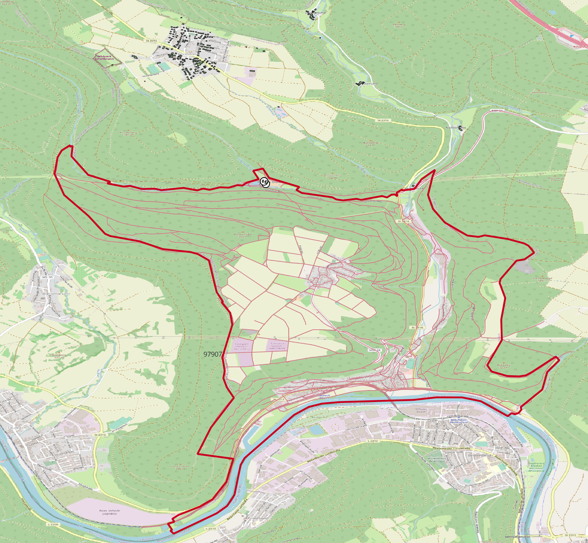

Building Data Import
The building data is the basis for the grid generation as the building data contains geographical information as well as the load that each consumer requires.
The building data is available at TUM as a dataset comprised of .shp files for residential res and other
oth buildings. The buildings are seperated by their Amtlicher Gemeindeschlüssel (AGS) a key for the
municipalities in Germany. The building dataset containing of files is to be unzipped and put into the directory
raw_data/buildings.
The files for Munich are thus named like this: Oth_9162000 and Res_9162000.
The task of importing the building data before further Grid Generation steps is handled by
- raw_data.import_building_data.import_buildings_for_single_plz(gg: GridGenerator) None
imports building data to db for plz:
PLZ is matched with AGS
file name is generated
buildings files are imported to database with SyngridDatabaseConstructor
AGS is added to AGS as not to import same building data again
- Parameters:
gg – Grid generator object to get the plz and functions from
Remark: The mapping of AGS with PLZ is not always unique. This might lead to unexpected building data import.
In this example, the PLZ for grid generation only overlapped with the AGS that buildings were imported in the most upper part of the PLZ area.
{kind=link}
The imported buildings can be inspected using the QGIS visualisation QGIS Visualisation in the
raw_data tab